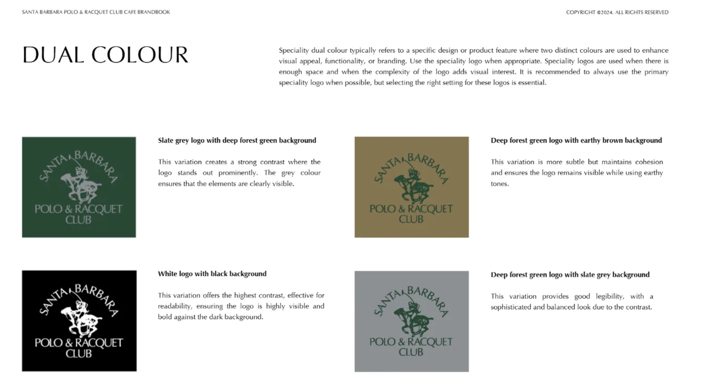
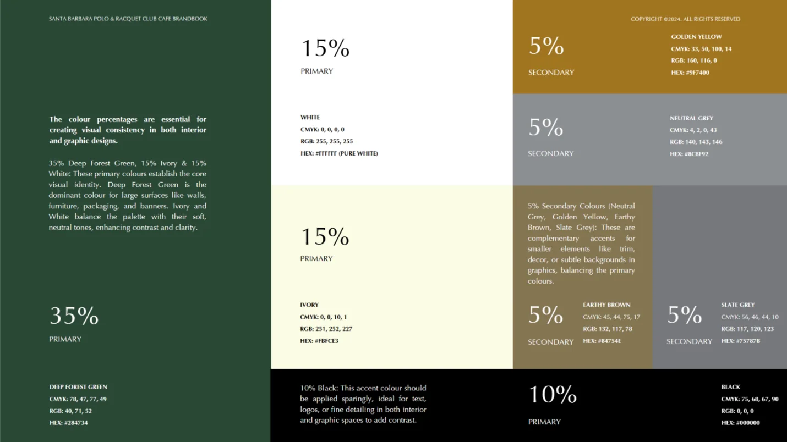
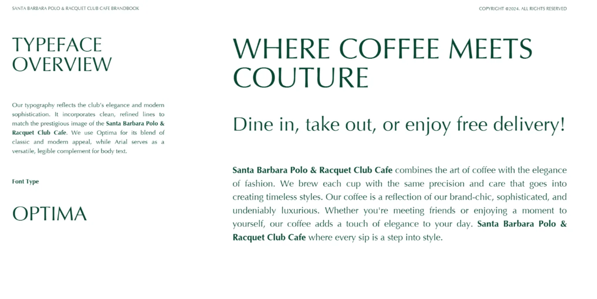
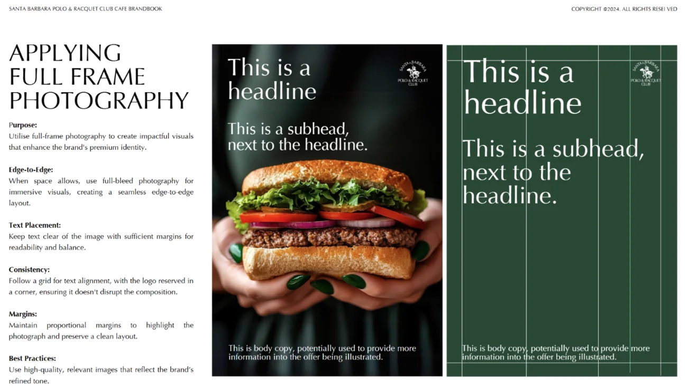
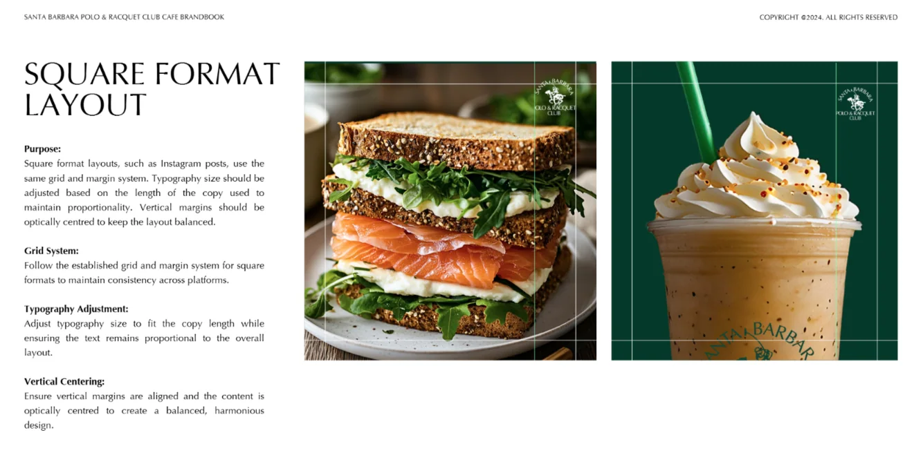

A refined cafe identity system shaped around polo heritage, deep forest tones, and a quietly elevated food and beverage experience.



The system balances classic club references with clean cafe applications, giving the brand enough structure for signage, social layouts, and launch collateral.


Photography and composition rules were designed to keep food visuals premium, direct, and easy to adapt across campaign formats.